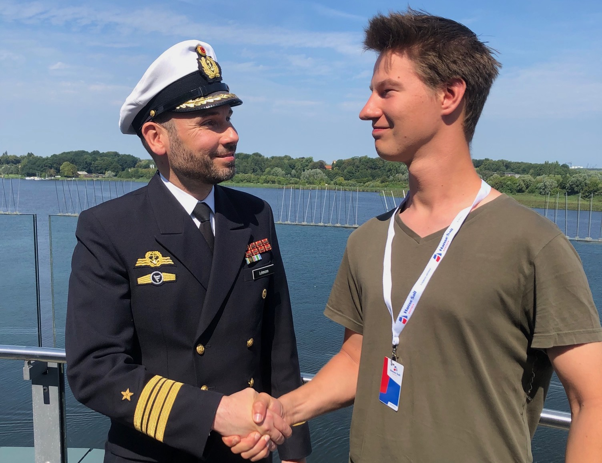
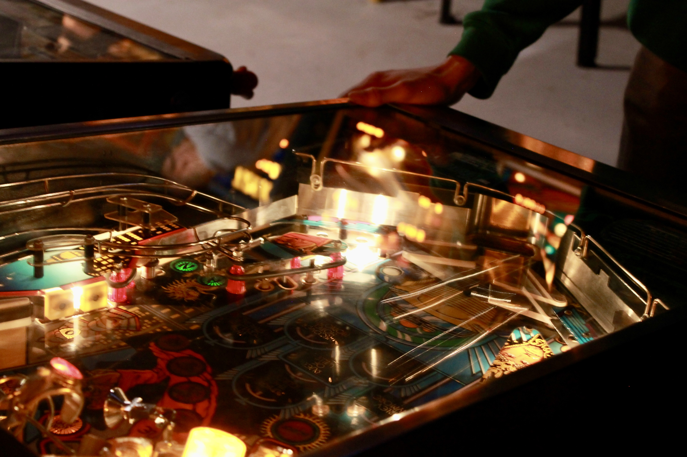

Kulttuuri / 17.4.2023
Savukkeiden alueellinen eroavaisuus
Ulkomaanmatkalle lähtiessään voi huomata tuttujen tuotteiden - kuten kokiksen - maistuvan ulkomailla hieman erilaiselta. Tämä makuaistimus ei kuitenkaan ole pelkkää matkan hurmetta tai mielikuvituksen tuotetta, vaan suurienkin yritysten tuotteissa on alueellista vaihtelua reseptin suhteen.



